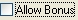

(text = "", font = "", size = "", weight = "", readonly = false,
set = false, tip = "")
Creates a Windows "button" control with the "checkbox" and "lefttext" styles.
Note: Control.Construct automatically sets the text on CheckBox fields with prompts.
CheckBoxControl has Set, Get, and Dirty? methods to work with RecordControl. It also has a Protect method to work with __protect rules.
For example:
Window(#(CheckBox 'Allow Bonus'))
would produce something like:
